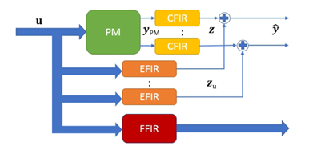

FUSE is a component for process input and state estimation, fusing plant physical model predictions with process measurements. The model and measurements are fused in nonlinear state estimation. In particular, the component is developed for estimation of combustion boiler input fuel composition characteristics. The component uses a physical model of the circulating fluidized bed boiler hotloop (fluidization and combustion) as well as on-line measurements from the process (flue gas, furnace temperatures, etc). The UKF approach can be applied for alternative state estimation purposes, given that a suitable plant model and measurements are provided. The FUSE demonstration uses a CFB boiler hotloop model (SFW proprietary), relevant for the WP3 Sumitomo pilot problem.
The UKF (Unscented Kalman filter) algorithm is well known and many implementations are available (e.g. in Matlab Control System Toolbox and Matlab Central open exchange). The COGNITWIN Matlab UKF tool focuses on practical aspects, enabling selection of subset of states/inputs to estimate, measurement selection, data validation and reconciliation, physical model tuning, UKF tuning, and reduction of computational load, so as to support exploitation of computationally heavy physical models in plant operation and control.
The PMFIR (Physical model finite impulse response tuning) tool has been developed to support tuning of physical models. The PMFIR tool is based on the idea of tuning a physical model with plant data using external finite impulse response (FIR) filters, associated with predicted outputs.
Figure 1 The PMFIR uses FIR filters for tuning of a physical plant model (PM).
The UKF and PMFIR tools are application independent and can be applied in a more general context, given that a plant model is provided.
The UKF tool originates from solving the WP3 pilot problem on fuel characterization, as a part of the heat exchanger fouling monitoring problem. The tool was tuned and tested using real full scale boiler plant design and measurement data.

Figure 2 FUSE fuel characterization during one week CFB operation.
Figure 2 illustrates the estimation filter outcomes during fuel test experiments. The top left picture shows the estimated fuel characteristics as a function of time. The coloured lines show the mass flow feed for pure forest wood chips, design fuel mix, and moisture. The black lines show the estimated and measured total fuel feed (indistinguishable). The bottom left picture illustrates the elementary composition of the estimated fuel feed. The right plots show the measured and predicted flue gas oxygen and sulfur dioxide concentrations and furnace temperatures during an eight-day plant operation period. The estimated fuel feeds match with the feeds during five known test setup periods (3 to 8 hours), also performance outside of test periods appears feasible.
The physical model and measurements are set up in the Matlab m-files. Input data (measurements) are provided as numerical vectors. Interactive tuning is enabled by Matlab interface/graphics. Estimation outcomes are provided as numerical vectors.
A link with StreamPipes is enabled by an OPC-UA client/server component (see FUSE OPC-UA tool).
The tool is implemented using Matlab language (m-files). Matlab from the Mathworks is required (FUSE has been tested on Matlab 2020b).
Matlab (2020b) is available on all major operating systems, including Windows 7, Ubuntu 16, Debian 9, MacOS 10 and newer. No particular Matlab Toolboxes are required. Open software Octave is known to be able to interpret m-files, but FUSE-codes have not been tested with Octave.
The PMFIR and UKF tools are free for use (contact Enso.Ikonen@oulu.fi). The CFB boiler hotloop physical model and plant measurement data are Sumitomo and pilot proprietary.
TRL 5 (validated in a relevant environment).
Ikonen, E. and I. Selek (2020) Calibration of Physical Models with Process Data Using FIR filtering. Australian and New Zealand Control Conference, Gold Coast, pp-143-148.
Ikonen, E. and I. Selek (2021) Fusing Physical Process Models with Measurement Data Using FIR Calibration. Control Engineering and Applied Informatics, 23 (2), 67-76.
Ikonen, E., M. Neuvonen, I. Selek, M. Salo and M. Liukkonen (2022). On-line estimation of circulating fluidized bed boiler fuel composition. 13th UK Automatic Control Council (UKACC) International Conference (CONTROL2022), 22–24 April 2022, Plymouth, UK. DOI: 10.1109/Control55989.2022.9781460
The PMFIR and UKF tools for Matlab are available for download at http://cc.oulu.fi/~iko/COGNITWIN/